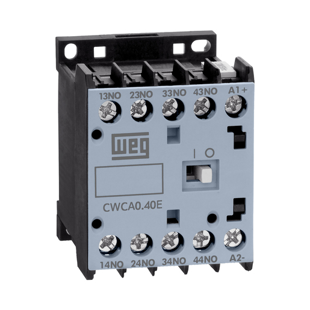

O contator é um interruptor automático que é acionado por eletromagnetismo. Sua segurança e eficiência são algumas das vantagens desse equipamento, permitindo o uso de um circuito com corrente menor e mais segura para ligar ou desligar um circuito de corrente muito maior.
Quando o contator está em repouso, ele permanece desligado, com os contatos internos em sua posição original. Assim que sua bobina é energizada, ela se torna um eletroímã, atraindo os contatos e fechando o circuito para seu acionamento.
De acordo com o SENAI (Serviço Nacional de Aprendizagem Industrial, 2003), existem dois tipos diferentes desse dispositivo: os de potência, que são maiores e mais robustos, feitos para suportar correntes elétricas mais elevadas que alimentam diretamente motores ou cargas mais pesadas; e os auxiliares, de menor porte. Estes não servem para ligar motores, mas sim para auxiliar na lógica do circuito de comando.

Destina-se ao controle de cargas puramente resistivas, como sistemas de aquecimento elétrico, fornos de resistência e circuitos de iluminação incandescente. Como o fator de potência é próximo de 1, não ocorrem picos de corrente na partida nem grandes arcos elétricos no momento da abertura, o que resulta em um desgaste mínimo dos contatos e maior vida útil do dispositivo.
Esta categoria é voltada para a partida, frenagem por contracorrente e inversão de marcha de motores de indução com rotor bobinado (anéis coletores), comumente encontrados em guindastes e pontes rolantes antigas. O contator precisa suportar correntes de partida elevadas, mas o estresse nos contatos é moderado pelo controle da resistência do rotor.
É a categoria mais utilizada na indústria, projetada para a partida de motores de indução padrão com rotor em gaiola de esquilo (como bombas d'água, ventiladores, compressores e esteiras). O contator suporta uma corrente de partida de 5 a 7 vezes a corrente nominal, mas o desligamento ocorre de forma suave, com o motor já em sua rotação plena, reduzindo o arco elétrico na abertura.
Aplica-se aos regimes mais severos de trabalho, como comando intermitente (pulsos ou jogging), inversão rápida de marcha e frenagem por contracorrente em pontes rolantes modernas e tornos mecânicos. O contator é superdimensionado porque precisa abrir o circuito enquanto o motor ainda está travado ou puxando a corrente máxima de partida, gerando arcos elétricos intensos a cada manobra.
Para saber Mais!